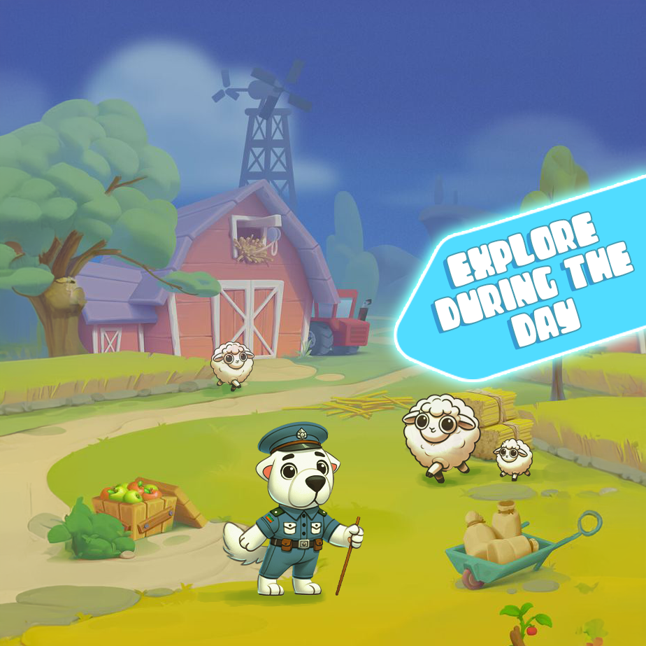
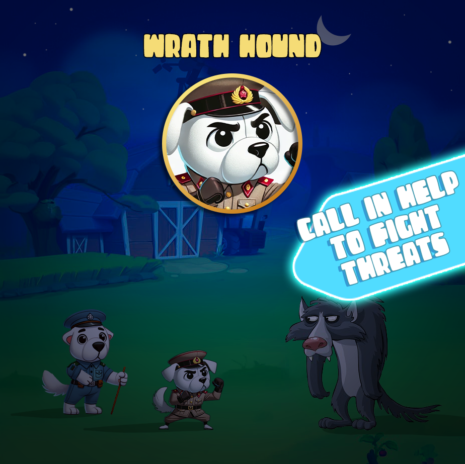
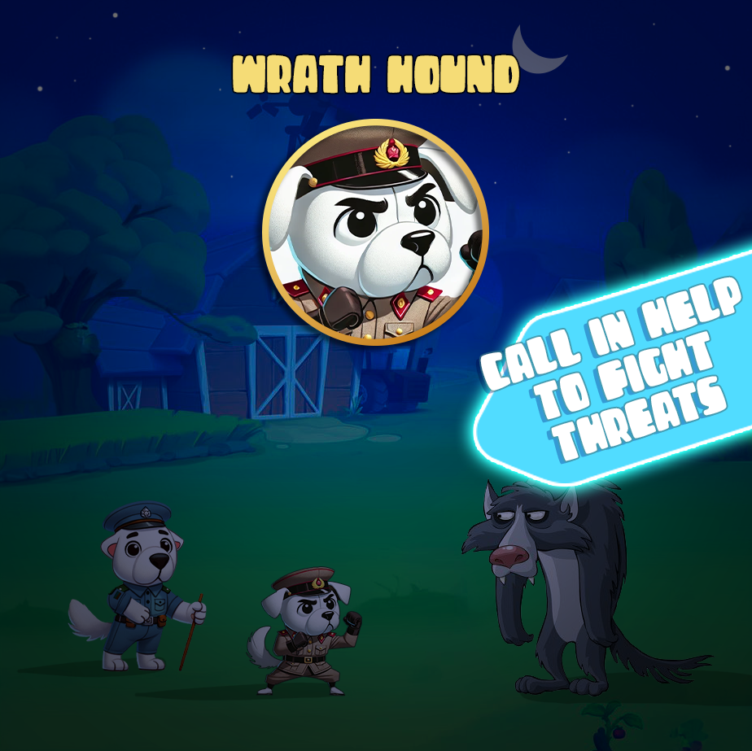
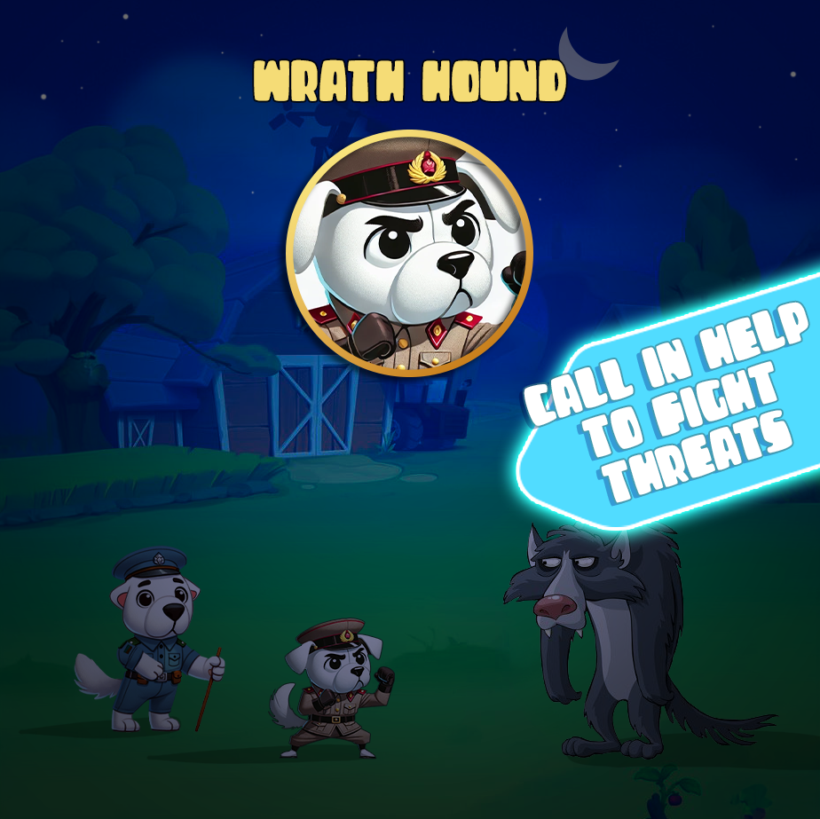

Take on the role of the legendary Alabay on a quest to uncover the ancient secrets of its ancestors.
GAME PREVIEW


FEATURES
Explore a variety of landscapes, including mountains, forests, deserts, and ancient ruins.
Use the Alabay's abilities to solve puzzles that involve moving objects, activating mechanisms, or finding hidden clues.
Discover relics that tell the story of the Alabay's ancestors, each piece contributing to a larger narrative about the breed's role in ancient history.
Unlock new skills and abilities for the Alabay, enhancing its capacity to explore and solve puzzles.
Challenge Modes:
- Time Trials: Compete in special timed challenges where the Alabai must navigate through complex mazes or
complete puzzles within a time limit.
- Exploration Mastery: A mode that rewards players for fully exploring every nook and cranny of the game's world,
uncovering all secrets
 
